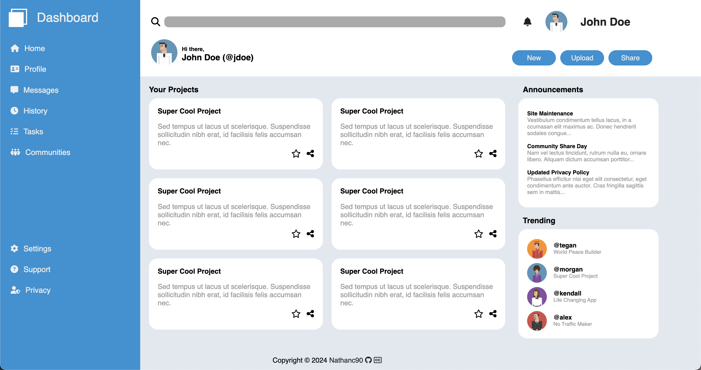
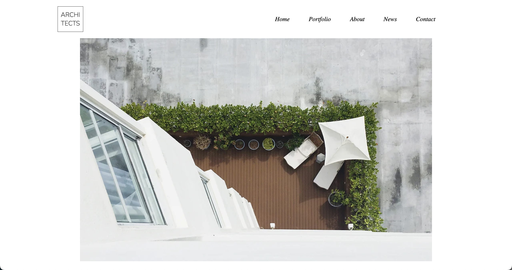
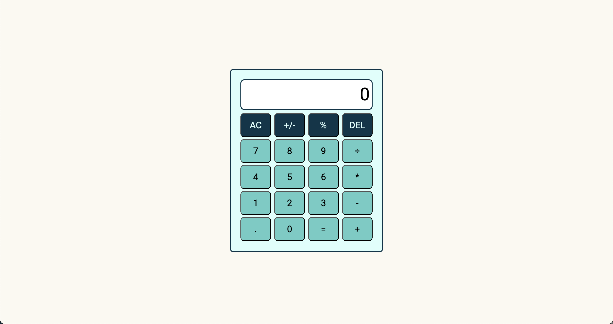
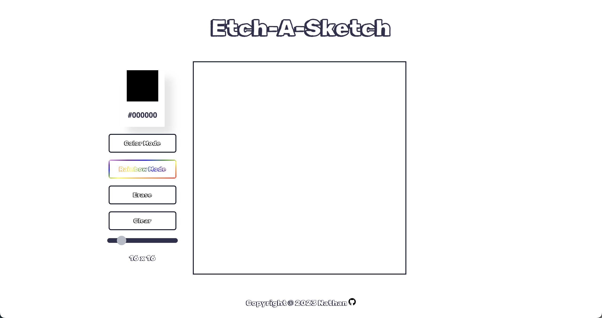
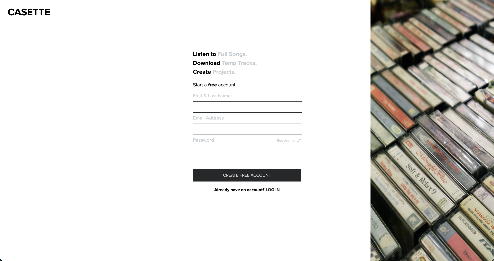
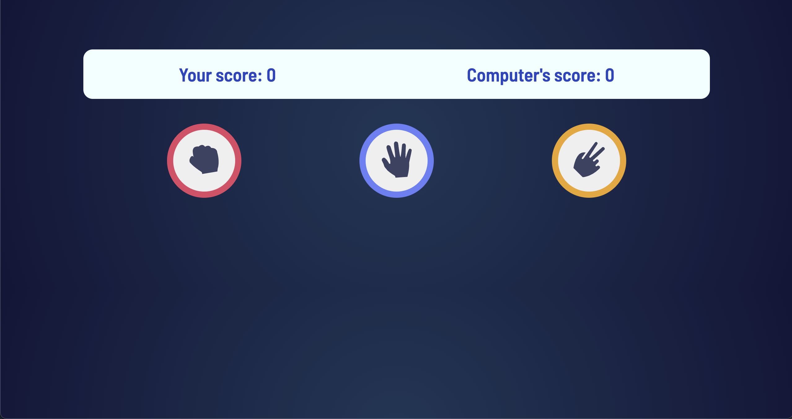

Building High-Performance
Frontend Experiences
打造 高效能的
前端體驗
I'm Nathan Chao, a solution-driven frontend developer specializing in scalable, responsive, and visually stunning web applications for forward-thinking brands. 我是 Nathan Chao，一位以解決方案為導向的前端工程師，專注為具前瞻性的品牌，打造高擴展性、響應迅速且視覺出色的 Web 應用。
Why work with me?為什麼選我？
I bridge the gap between bold, intuitive design and robust engineering.我致力於在大膽直覺的設計與嚴謹的工程之間，搭起一座紮實的橋樑。
Clean Architecture整潔的程式架構
I write semantic, maintainable, and modular code that scales as your product grows.我撰寫語意化、易維護且模組化的程式碼，隨著您的產品一起成長。
Pixel-Perfect UI像素級精準的 UI 呈現
Translating complex designs into responsive, interactive, and accessible user interfaces.將複雜的設計稿，轉化為響應式、互動良好且無障礙的使用者介面。
Performance First效能優先
Optimizing web vitals, minimizing bundle sizes, and achieving buttery smooth 60fps animations.持續改善 Web Vitals 核心指標，最小化套件體積，實現流暢的 60fps 動畫效果。
Selected Work精選作品
A showcase of scalable applications and interactive UI components.展示一系列可擴展的應用程式與互動式介面。

Admin Dashboard後台管理面板
A responsive administrative layout utilizing complex CSS Grid architectures and Flexbox positioning.運用複雜的 CSS Grid 排版與 Flexbox 對齊技術，打造的響應式後台管理介面。

Coca ArchitectCoca 建築設計事務所
A sleek, professional landing page built to demonstrate modern layout techniques and brand aesthetics.一個流線專業的落地頁，展示現代網頁排版技術與品牌視覺美學。

Interactive Calculator互動式計算機
A fully functional web calculator featuring robust mathematical logic and error handling.功能完整的網頁計算機，具備縝密的數學運算邏輯與錯誤處理機制。

Etch-a-Sketch創意塗鴉板
A dynamic browser-based sketching tool demonstrating intense DOM manipulation and event listeners.一個基於瀏覽器的動態小畫板，展示了大量的 DOM 操作與事件監聽處理。

Sign Up Form會員註冊表單
A meticulous user registration flow with custom client-side validation and focused visual feedback.設計細致的會員註冊流程，含自訂用戶端驗證與清晰直覺的視覺回饋。

Rock Paper Scissors猜拳遊戲
A classic interactive game built to highlight core JavaScript logic loops and UI updates.經典的猜拳遊戲，用來展示 JavaScript 核心邏輯迴圈與狀態管理的精髓。
Core Stack核心技術棧
Technologies I leverage to bring visions to life.我用來將構想轉化為現實的技術工具。